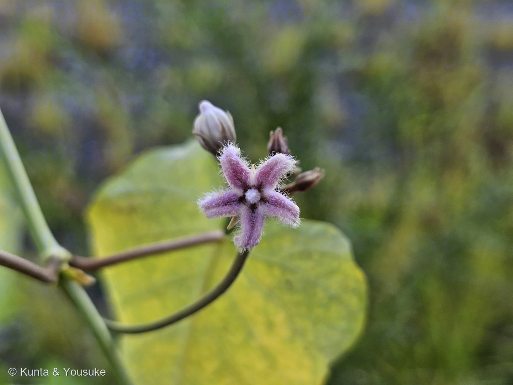
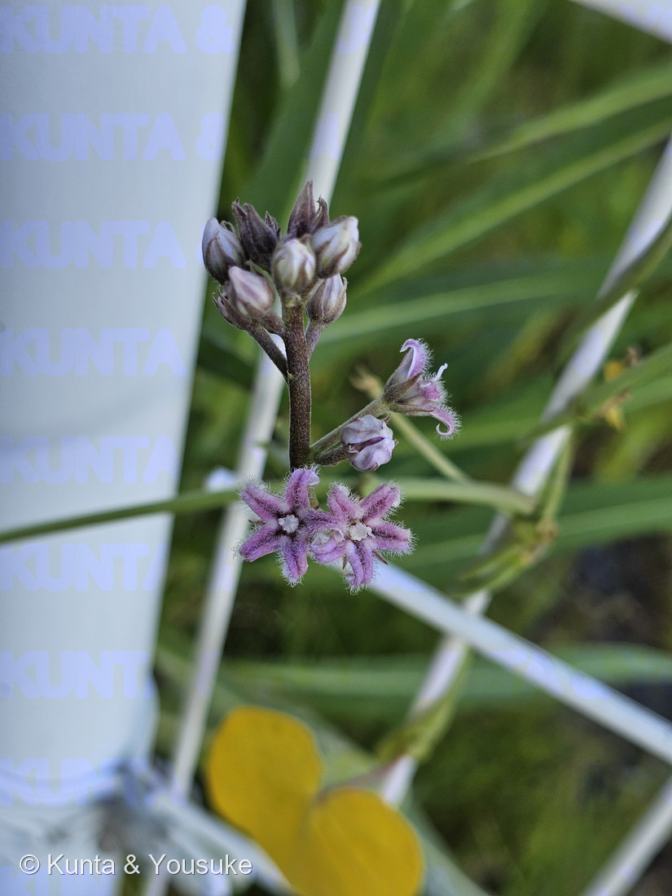

地図を読み込んでいるよ…
🔍 写真も地図も、押しているあいだ拡大して見られるよ（スマホは指を置いてすこし待ってね）。
🌍 の地図＝この子がもともと自生している場所を緑に。日本・東アジア（在来のつる草）。
⚠ 地図は国（日本と中国だけ県・省）までしか塗れないから、ほんとうの分布より広く見えていることがあるよ。地図はだいたいの場所。正確なところは、上の文を見てね。
ガガイモ（蘿藦）
Metaplexis japonica (Thunb.) Makino
別名 · 羅摩／種子は羅摩子（らまし） ／ 2016年の学説で Cynanchum rostellatum（イケマ属）
キョウチクトウ科 · Apocynaceae（ガガイモ亜科・ガガイモ属）
燻太さんの言葉「紫色のふわふわの星。てんとう虫も遊びに来てる。しなやかな蔓は華奢な割に結構丈夫そう」……手がかりがぜんぶ的中。そして、045ブルースターと同じ一族の“名前の主”だった。
名前と学名の由来 ── 昔の暮らし
- Metaplexis＝ギリシャ語で「編み合わさる」ほどの意（つるが絡むさま）。⚠2016年の学説でイケマ属（Cynanchum）に統合が妥当とされ、Cynanchum rostellatum も使われる（→ おまけを「イケマ」にしたのは、この統合先の本家だから）。
- ⭐和名ガガイモの由来＝「割れた実の内側が、鏡のように光る」→ カガミイモ（鏡芋）→ 訛ってガガイモ。
- 種の白い綿毛（種髪）は、綿の代用や、朱肉（印の朱の詰め物）に使われた。切り傷には白い毛をつけると良いとされた（止血）。種子は生薬「羅摩子」。
燻太さんの手がかりが、ぜんぶ的中
- 「紫色のふわふわの星」＝淡紫〜白の花。花冠が5つに深く裂けて星形に反り返り、内側に白い軟毛が密生する（＝あの“ふわふわ”）。
- 「しなやかな蔓は華奢な割に結構丈夫」＝つる性の多年草で、蔓は2〜8mにも伸び、細いのに強い。対生のハート形（心形）の葉。
- 「てんとう虫（ナナホシテントウ）」＝たぶんアブラムシを狩りに来た客。ガガイモ亜科（トウワタの仲間）はオレンジ色のアブラムシがよく群れる。花に用があるというより、虫を食べに来た益虫（送粉者ではない）。
- ⚠キョウチクトウ科なので茎を切ると白い乳液が出る。有毒。（020 フィロデンドロン・045 ブルースターと同じ「乳液に注意」の仲間）
⭐⭐⭐ 045 ブルースターと、同じ一族 ── 「ガガイモ亜科」の名の主
- ⭐ガガイモは、ガガイモ亜科の“名前の主”。そして——045 ブルースター（Tweedia caerulea）も、まったく同じ亜科。
- 045 で説明した、この一族の身分証明が、この野の蔓にも全部そろっている：
- 副花冠（corona）＝花の中心の環状の構造（ガガイモ亜科の目印）。
- ⭐⭐花粉塊（pollinia）＝花粉が粉ではなく、塊にまとまっていて、虫の脚に「荷物」として丸ごと渡される。
同じ発明をした植物は、遠く離れた ラン科（002 ネジバナ）だけ＝収れん（他人の空似）。045 で書いたこの話を、日本の野の蔓が、そのまま見せてくれる。 - 綿毛の種の袋果＝下の「果実」参照。
- → つまり、045（南米生まれの園芸の青い星）と 051（日本の野の紫の星）は、遠い親戚。外来の一輪と、在来の一輪が、同じ一族としてつながった。
⭐⭐ 果実は「舟」── 古事記の神さまが乗ってきた
- 花のあとにできるのは、長さ8〜10cmの、紡錘形の大きな袋果。
- ⭐熟すと縦に割れて、内側が舟の形になる。中から、白い綿毛（種髪）のついた種がこぼれて、風に飛ぶ（045 ブルースター・フウセントウワタと同じ、綿毛の散布）。
- ⭐⭐⭐この“割れた実の小舟”が、日本神話に出てくる。
古事記で、小さな神さま スクナビコナ（少名毘古那）は、「天之蘿摩船（あまのかがみのふね）」に乗って海の向こうからやってくる。——それが、ガガイモの実を2つに割った、小さな舟のこと。 - この野原の花の実が、神さまを運ぶ舟だった。
⭐⭐⭐【2026.08.22 追記】10か月ぶり、同じ場所で「真夏の花」に会えた
⭐ 上の写真①は 2025年10月26日。——写真②③は 2026年8月22日の朝7時30分、おなじ場所のフェンスだよ。⚠10か月ぶりの再会。⭐前は地面ちかくの草にからんでいたのが、今度は柵をのぼっていた。
⭐⭐⭐ そして分かったのは、前の写真が「名残」で、今度が「本番」だったこと。——ガガイモの花期は8〜9月（三河の植物観察）。⭐①の10月26日は、その終わりかけ。②③の8月22日は、まんなか。⭐⭐だから燻太さんの「真夏でもこのふわふわの花は咲いているみたい」は、「真夏でも」じゃなくて「真夏こそ」なんだ。
⭐⭐ 写真③で、花のつきかたが見えた。——三河の植物観察は「葉腋に、短い円錐花序をつけ、直径約1㎝の淡紅紫色の花を固まってつける」と書いている。⭐写真③の、太い柄の先にかたまった白いつぼみ＝これがその「短い円錐花序」だよ。⚠そして近くで見ると、その柄にびっしり短い毛が生えている＝⭐葉のほうは「無毛」なのに、花のがわだけ毛だらけなんだ。
⭐⭐⭐ つぼみが、らせんにねじれている。——写真③のつぼみをよく見ると、白と暗い紫のたてじまが、少しねじれながら包まっているのが見えるよ。⭐これはキョウチクトウ科ぜんたいの目じるし＝花びらがつぼみの中で、傘をたたむようにねじれて重なる（ねじれ状の重なり・contorted）。⭐ひらいたあとも、そのねじれのあとが残ることがある。
⭐⭐ まんなかの白いもの＝副花冠とずい柱。——写真②で、5枚の毛だらけの裂片のまんなかに、白い小さな冠のようなふくらみが見えるでしょう。⭐これが、上で書いた「副花冠（corona）」だよ。三河の植物観察は「副花冠は環状、5裂し、裂片は短く、雄しべの間につく」と書いている。⭐そのまわりで雄しべが合わさっているのが「ずい柱（肉柱体）」＝⭐⭐花粉塊が虫に渡されるのも、ここ。045 ブルースターで書いた身分証明を、こんどはひらいた花のまんなかで見たことになる。
⭐⭐⭐⭐ 新しい学名の rostellatum が、花のかたちと重なった。——上で書いた2016年の新学名 Cynanchum rostellatum。⭐rostellatum はラテン語で「小さなくちばしのある」という意味（ミズーリ植物園『A Grammatical Dictionary of Botanical Latin』＝"somewhat beaked, provided with a short or minute beak, or rostellum"）。⭐⭐そして三河の植物観察は、ガガイモのずい柱を「中心から柱頭がくちばし状に突き出す。柱頭の先はよれて曲がる」と書いている。——⭐名前と、花のかたちが、ぴったり重なるんだ。⚠ただし「そのくちばしから名づけた」と書いてある文章は、ぼくはまだ見つけられていない＝⭐だから「重なる」までにしておくね。
⏳ 次の宿題がふたつ。——⭐①写真②は花を真上から撮っているので、その「くちばし」は白いふくらみのかげで見えない。次は横から撮ってみよう。そうすれば、突き出した柱頭が見えるはず。⭐②9月から10月には、あの舟になる実。おなじ場所だから、また会いに行けるよ。
出典：三河の植物観察「ガガイモ Cynanchum rostellatum」（mikawanoyasou.org）／ミズーリ植物園「A Grammatical Dictionary of Botanical Latin」rostellatus（mobot.org）／庭木図鑑 植木ペディア「ガガイモ」（uekipedia.jp）